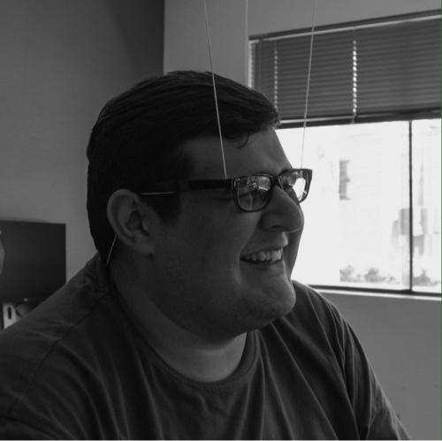

The fun is in figuring it out
A product-minded designer with 10+ years of experience doing work for the web; first as a full stack engineer, then focusing on the front end, just to then end up where my passion and admiration always lied: Design.
My fascination with communication took me to help build up the digital experience for several of the most important publication brands in Paraguay, to then transition into the exciting startup world through Toky: a turn-key solution to make communication between companies and customers as easy as possible. To eventually really sink my teeth into an exciting project such as the Telnyx Mission Control Portal, where I helped start the Design System efforts while churning lots of features.
Currently I’m working as a Senior Product Designer for Rocket.Chat, an enterprise-grade messaging platform. I’m a part of the Team Collaboration and Design Systems squads.
Work samples and case studies are shown upon request. If you're interested shoot me an email! I’d love to have a chat.